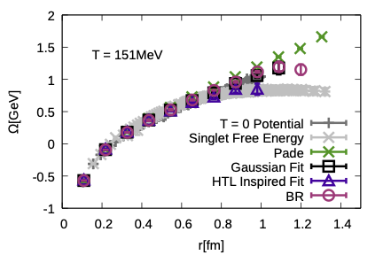
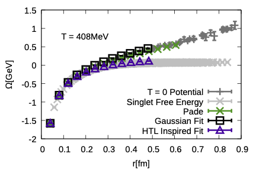
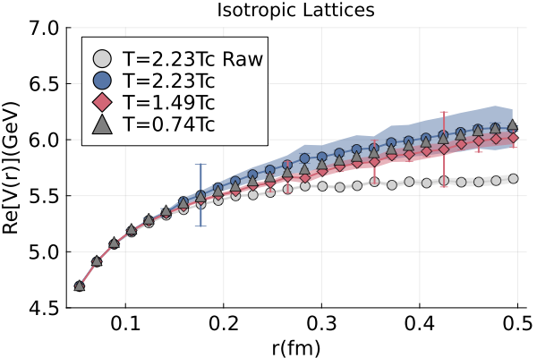
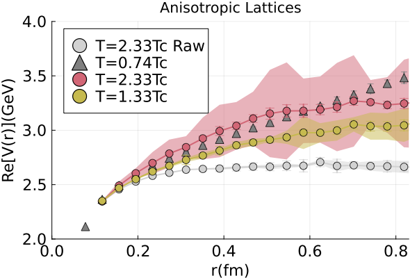

Find my Masters thesis and PhD thesis.
The interactions of heavy quark and anti-quark pair are essential in understanding the primordial state of matter created in heavy-ion collisions, the quark-gluon plasma . These interactions can be studied through a complex potential between these static colour sources in the presence of a thermal medium. Together with my supervisor Alexander Rothkopf, Rasmus Larsen (postdoc at University of Stavanger) and colleagues at the HotQCD collaboration we studied this potential using lattice QCD simulations using the Highly Improved Staggered Quark(HISQ) action. We computed the Wilson Line correlator in Coulomb gauge and extracted the potential using four different methods; Gaussian fits, HTL-inspired fits, the Pade and Bayesian reconstruction, all having a different set of assumptions. The BR-method was rendered inapplicable due to the presence of non-monotonicity in effective masses at higher temperatures. We found that contrary to previous studies, the real-part of the potential showed no temperature dependence from all methods except for the HTL-inspired fits. Check out the full manuscript for more details.
 
Discoveries from the heavy quark potential on HISQ lattices were quite puzzling and were contrary to previous studies and general intuition. Thus, we reinvestigated the interactions between static color sources in a finite temperature gluonic medium using both high resolution isotropic and anisotropic quenched lattice QCD ensembles. We generated configurations using the naive Wilson action to avoid any artifacts of non-monotonicity and making the BR-method applicable. Using the raw unmodified lattice data, all applicable methods show clear signs of screening of the real part of the potential beyond the transition temperature. After applying a subtraction procedure featured in the HISQ study, we find however that screening disappears from the extracted potential. Check out the full manuscript for more details.
 